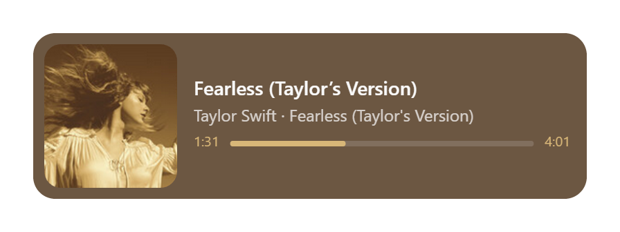

◆ Frameless & floating
A transparent card that sits on your desktop, drags anywhere, always-on-top by default.
Now playing · Windows 10 & 11
A featherweight, frameless widget that mirrors whatever is playing on Windows — artwork, metadata and timeline — and tints itself to the album art. Native SMTC, built with Rust + Tauri. No Electron. No bloat.
Free & open source · MIT · latest release
How it works
No window-title scraping, no media-key hooks. Frieda rides the same feed behind the Windows media flyout.
Spotify, Tidal, Apple Music, a browser tab, foobar2000 — if it talks to Windows' media keys, Frieda can see and control it.
The Windows Media Transport Controls API, event-driven. Artwork, title, artist, album and timeline — no polling, no guesswork.
Two perceptually distinct colors are pulled from the cover and nudged to readable contrast, so the card matches the mood of the music.
Features
Everything you need to see and steer what's playing — nothing you don't.
A transparent card that sits on your desktop, drags anywhere, always-on-top by default.
Artwork, title, artist · album and a smoothly animated progress bar that keeps up.
The card tints itself to the cover — bright covers earn bright cards with dark text, and vice-versa.
Previous / play-pause / next with instant optimistic feedback, plus a click-to-seek bar along the bottom.
The slider drives the media app's own audio session in the Windows volume mixer — not the system master.
Long names drift out to their tail and back on a slow cycle, so the full title is readable at a glance.
One click redraws the card to a PNG on your clipboard — the shortcut for sharing what you're listening to.
While the widget is focused: ←/→ seek, ↑/↓ volume. Quiet, quick, out of the way.
Show / hide, always-on-top, run at startup, dynamic theme and update checks live in the system tray.
Fully event-driven and written in Rust + Tauri — a fraction of the footprint of an Electron app.
The signature
Frieda's color grading is inspired by Panic's iTunes 11 algorithm: the two most common perceptually distinct colors — compared in the YUV space — become the card and the accent, nudged until they pass WCAG contrast (≥ 4.5:1).

Extracted from Fearless (Taylor’s Version) — one cover, one palette.
Works with
Frieda is a visualizer and controller, not a player — it never touches the audio itself.
…and every other app with native SMTC support.
“Music is more than sound waves on your ears. Album artwork is part of the music — the mood the artist wanted you in before the first note played.”
— from the Frieda Player README
Roadmap
.AppImage / .deb artifactsFree, open source, and small. Download it and press play.